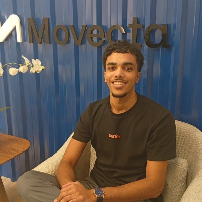
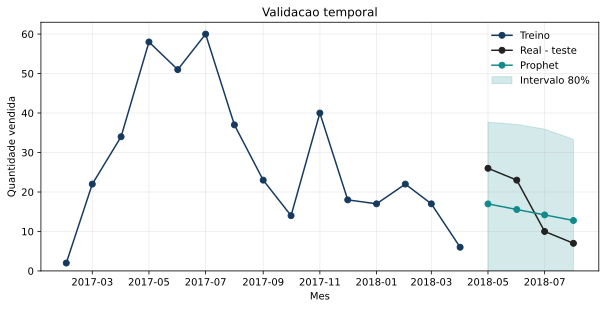
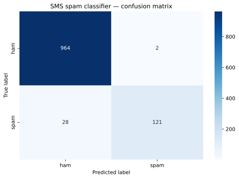
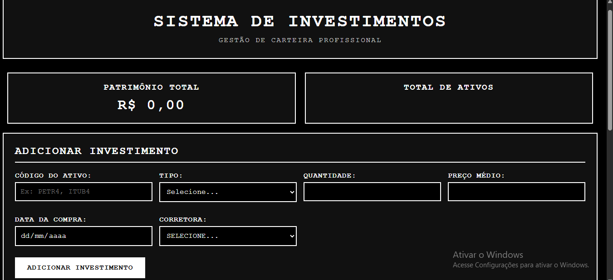

TIAGO.SOUSAPeople Analytics
disponível para conexões
People Analytics · Data Science
Sou Tiago Sousa. Transformo perguntas de negócio em análises claras, indicadores confiáveis e experiências de dados que ajudam pessoas a decidir melhor.

disponível para conexões
mova o cursor para explorar
acurácia no classificador de spam
de horizonte no case de forecasting
públicos, documentados e reproduzíveis
tecnologia só faz sentido com contexto
Minha perspectiva 01
Minha trajetória acontece na interseção entre a realidade das pessoas, a lógica dos dados e o ritmo do negócio.
Na Movecta, participo da organização, análise e governança de informações de Gente & Gestão. Na FIAP, aprofundo programação, estatística, bancos de dados e Machine Learning por meio de projetos aplicados.
Gosto de construir soluções que possam ser explicadas: bases rastreáveis, métricas honestas, visualizações que orientam e código que outra pessoa consegue executar.
Transformar uma necessidade real em uma pergunta clara e mensurável.
Organizar fontes, critérios e processos para análises consistentes.
Traduzir achados técnicos em uma leitura útil para a decisão.
Experiência 02
Uma atuação orientada por qualidade, confidencialidade e utilidade para Gente & Gestão.
Movecta
Apoio à estruturação, análise e governança de dados de pessoas para gerar indicadores mais confiáveis e apoiar decisões da área.
Projetos selecionados 03
Três entregas públicas com problema, método, resultado e documentação — do forecasting à aplicação web.

Forecasting · Série temporalCASE / 01
Case de previsão mensal de demanda que combina validação cronológica, comparação com baselines e uma leitura honesta da incerteza.
Projetar a demanda futura sem deixar informações do futuro contaminarem a avaliação.
Prophet, divisão temporal, baselines ingênuos e métricas complementares.
Previsão de três meses com MAE de 6,61 e limitações documentadas.

NLP · ClassificaçãoCASE / 02
Pipeline reproduzível para classificar mensagens SMS como spam ou legítimas, da limpeza do texto à avaliação do erro.
TF-IDF, Multinomial Naive Bayes e divisão estratificada.
Precisão de 98,37% para spam, com erros explicitamente apresentados.

Aplicação · Banco de dadosCASE / 03
Aplicação para registrar ativos, consultar uma carteira e consolidar patrimônio sobre um modelo relacional em Oracle.
Flask, JavaScript, Oracle SQL, variáveis de ambiente e procedures.
Estrutura organizada, respostas seguras e dados sintéticos para demonstração.
Stack 04
Uma base em expansão, com foco nas ferramentas que já uso em trabalho, estudo e projetos.
Da organização da base à comunicação executiva.
Ferramentas para explorar, tratar e integrar dados.
Métodos para compreender padrões e construir previsões.
Estrutura, qualidade e rastreabilidade da informação.
Formação 05
Estatística, programação, análise de dados, Machine Learning, bancos de dados, Big Data, visualização e nuvem.
Competências corporativas, comunicação, tecnologia, inovação, sustentabilidade e resolução de problemas.
Alura · 2026
FIAP
FIAP
Alura · 2025
FIAP · 2025
Contato 06
Estou construindo minha trajetória em Analytics e Ciência de Dados com experiência corporativa, estudo contínuo e projetos aplicados.